"Vatanını en çok seven, görevini en iyi yapandır."
- M. Kemal Atatürk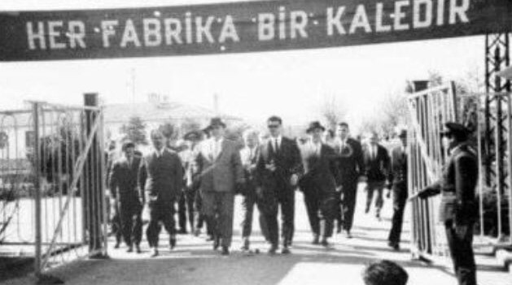
Hakkımda
2022 yılında Erciyes Üniversitesi Elektrik-Elektrik Mühendisliği bölümünden mezun oldum (3.07) ve hala Havacılık Elektrik Ve Elektroniği bölümünde tezli yüksek lisans eğitimime (3.63) devam etmekteyim. Stajlarımı Türkiye'nin 3'üncü büyük elektronik üreticisinin AR-GE departmanında tamamladım. Askerlik sürecine kadar bir anadolu teknik meslek lisesinde elektrik öğretmenliği görevi yaptım. Bu süreçte çeşitli projeler için danışmanlık ve FRC gibi yarışmalar için mentörlük görevinde bulundum. 1.5 yıl kadar A tipi bağımsız bir firmada Elektrik-Elektronik mühendisi olarak çalıştım. İstanbul'da bir vakıf üniversitesinde kurumun Elektrik Mühendisi olarak görev yapmaktayım. Ayrıca EKİPNET Yetki Belgesi'ne ve bakanlıkta ilgili kayda sahibim.
Edindiğim tecrübelerle, bugüne kadar pek çok farklı durum ve güvenlik ihtiyacı kapsamında danışmanlık yaptım.
Projeler
Tıp elektroniği (Electromyography Controlled Prosthetic Arm :2021), RFID teknolojisi (Smart Market Payment System :2022), IOT (Bütünleşik Restoran Yönetim Sistemi :2023), Görüntü işleme (Python ve OpenCv ile Güvenlik Kamera Uygulaması :2023) alanlarında çeşitli projeler gerçekleştirdim.
Çalışma Alanlarım
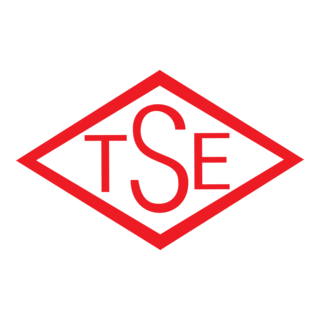
ISO/IEC 17020Sertifikalar & Belgeler

EKİPNET Yetki Belgesi
Elektrik Mühendisleri OdasıÇalışma ve Sosyal Güvenlik Bakanlığı tarafından verilen EKİPNET Yetki Belgesi'ne ve bakanlıkta ilgili kayda sahibim.

Sportif / Amatör İHA/Drone Pilot Sertifikası
SHGM / Sivil Havacılık Genel MüdürlüğüIHA - 1 - Sportif / Amatör

İleri Girişimcilik Eğitim Sertifikası
KOSGEB(KSB012021U149G130909E)

Uygulamalı Girişimcilik Eğitimi Sertifikası
KOSGEB(KSB012020U149G122083E)
Referanslar & Çalışmalar
 İBB
İBB Kıyı Emniyeti
Kıyı Emniyeti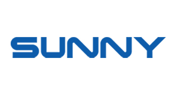
Sunny Şehir Hatları
Şehir Hatları İstanbul Gelişim
İstanbul GelişimÜniversitesi
 Piri Reis Üniversitesi
Piri Reis Üniversitesi LC
Waikiki
LC
Waikiki Ceva Lojistik
Ceva Lojistik İHE
İHE İOSB
Mesleki ve Teknik
İOSB
Mesleki ve TeknikAnadolu Lisesi
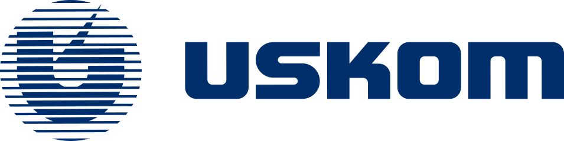
UskomİBBKıyı EmniyetiŞehir Hatlarıİstanbul GelişimÜniversitesi
Piri Reis ÜniversitesiLC
WaikikiCeva LojistikİHEİOSB
Mesleki ve TeknikAnadolu Lisesi
Fotoğraflar
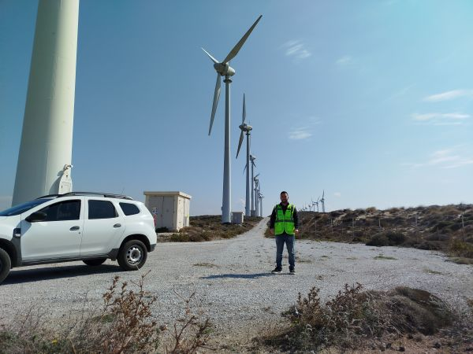
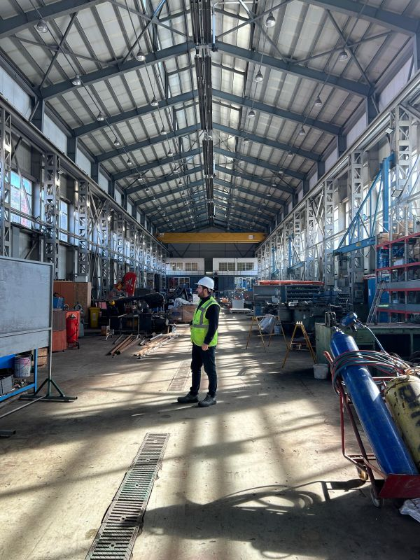
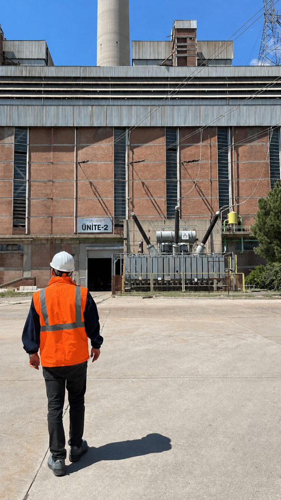
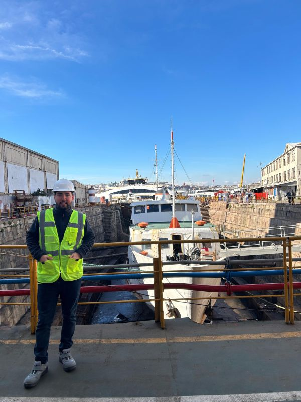
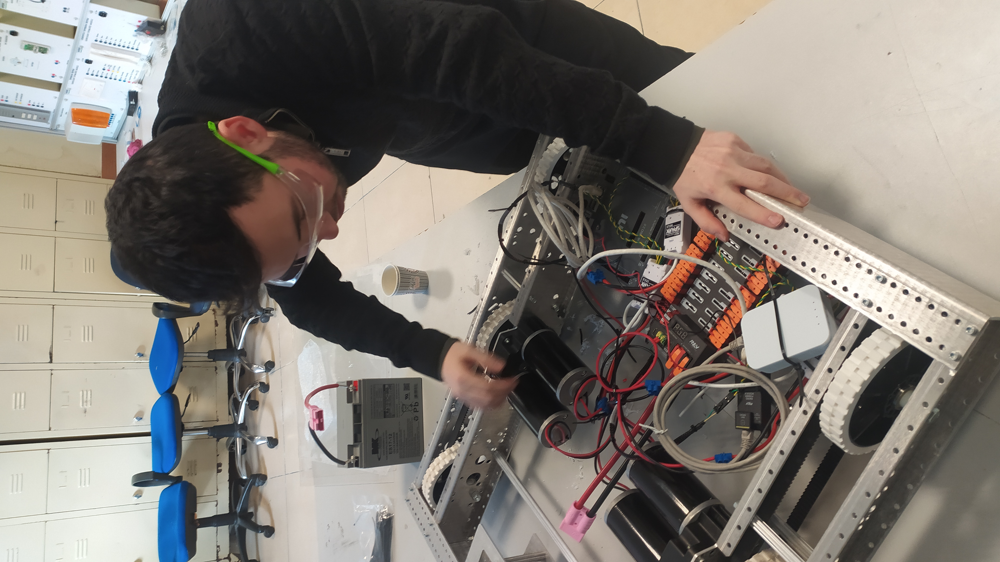
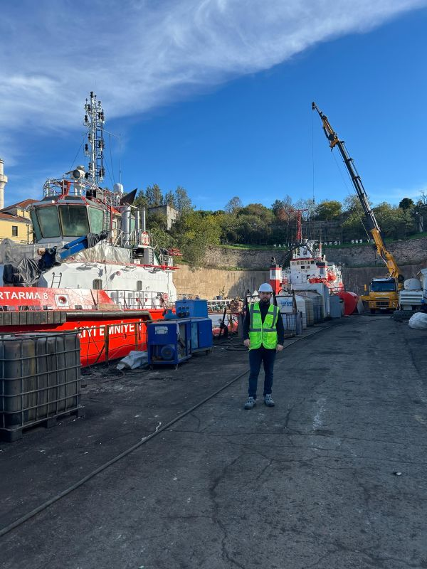

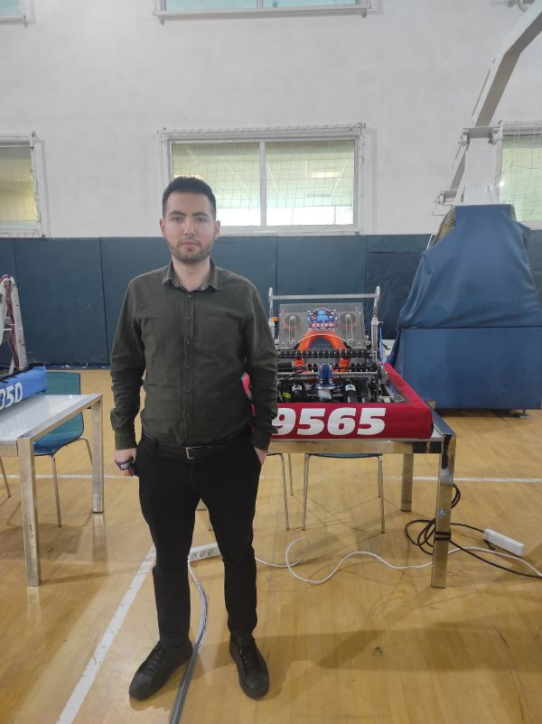

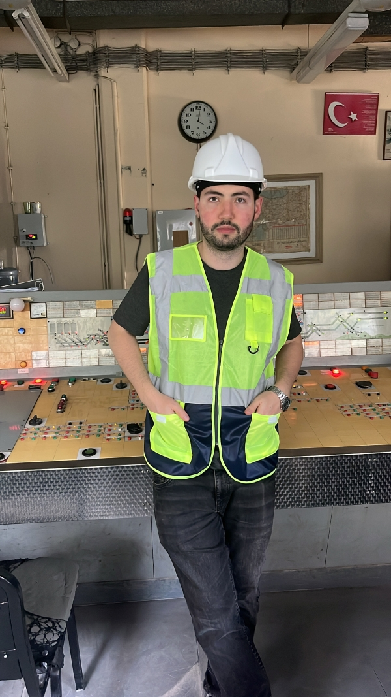
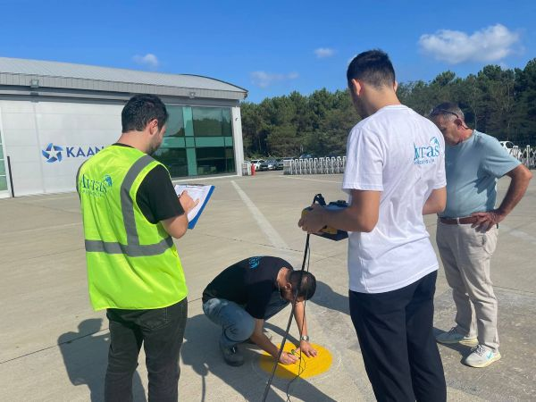
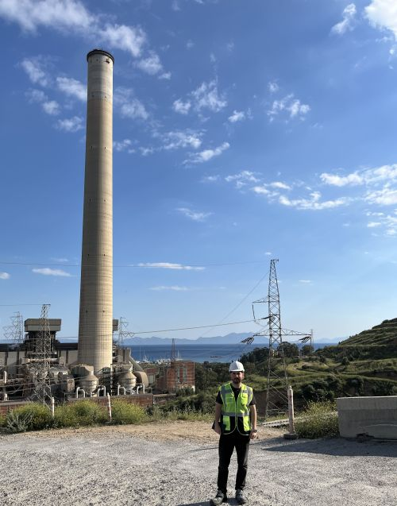